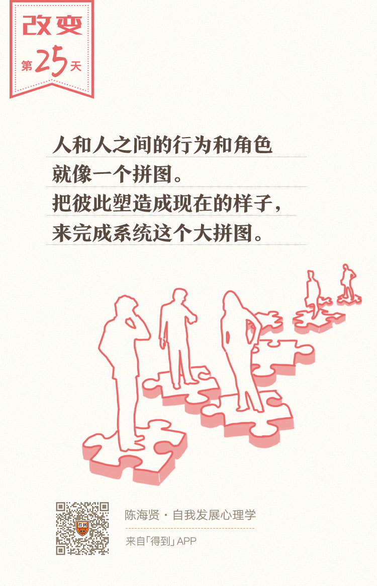

25丨关系的互补：系统如何塑造你我？

欢迎来到《自我发展心理学》。
你好，我是陈海贤。
前面两节课，我们讲到了角色如何影响我们的所思所想，我们又是如何通过识别关系的语言，沟通彼此的角色信息。
可是，这种角色的分配是怎么完成的呢？为什么我们明明在扮演一个自己不喜欢的角色，却仍然无法做出改变呢？
今天这节课，我们要从一个更大的角度，来思考角色的分配。我们要从系统的视角，来讲讲关系的互补。
角色是系统逐渐生成的
我的老师曾经跟我讲过他的老师，心理咨询大师米纽庆的故事。
有一天米纽庆带太太去和同事们去聚会。他看到太太在和一群同事谈笑风生，讲了很多有趣的笑话，这些笑话连米纽庆都没听过。他很吃惊，从来没发现太太居然还有这种讲脱口秀的才能。
从那之后，米纽庆在反省，为什么他从来没有发现太太有这一面呢？原因很简单：太太从来没在家里表现过这一面，她没什么机会表现。
这么多年，太太辅佐他的事业，相夫教子，实际上是埋没了自己的一些才能的。她为婚姻做出了一些牺牲。
婚姻的一个事实是，因为结婚，每个人都需要在婚姻中扮演不同的角色，才能让这个家庭顺利运转下去。有些人成了面子，就有些人成了里子。婚姻是有牺牲的，这就是一种互补。
正如婚姻一样，我们每个人也总是属于某个系统的一部分。
这个系统可以是公司、家庭，也可以是社会。这个系统要运作起来，就需要不同的角色。所以有些人当了面子，有些人当了里子，哪怕百般不情愿。
有时候，人在江湖，身不由己。角色是系统运作时逐渐生成的，而不是个人选择的结果。
举个例子。
家里很乱，儿子和丈夫却都在玩，妻子呢，虽然下班很累了，却会去收拾。
妻子觉得，是儿子和丈夫不收拾，所以她不得不去收拾。可是也正是由于她会去收拾，儿子和丈夫就可以忍着不用收拾。这就是妻子在家这个系统里所扮演的角色，是家里三个人共谋的结果。
这个故事还有另一面。
妻子总是干活，心里会有怨气。她就会有很多的抱怨和控制。这种抱怨也许就让儿子变得反叛，让老公变得疏离。这时候，他们更想不到要为妻子做点什么了。
而妻子呢？就会更抱怨，觉得自己为家付出这么多，可是不仅没有什么回报，老公和孩子还不体谅自己。
从个体的角度，也许你会说，这是一个控制的妈妈，她心里有很多的不安全感。
可是从系统的角度，你就能看到，无论是妈妈的劳累，还是妈妈的抱怨和控制，都是系统运转的结果。
是这个系统，让妈妈承担了这样一个角色。这个角色，又限制了她的行为。
虽然身处关系中的自己也很痛苦，很想改变，但因为系统运转的需要，他们自己也很难改变。这就是系统中关系的互补。
什么叫关系的互补性呢？
我的老师在上课时，用了东方的阴阳哲学来帮助我们理解。
她说：
这种互补性很像中国人说的阴阳，它们看起来彼此对立，但又是矛盾统一的。
就像老子说的：“天下皆知美之为美，斯恶矣；皆知善之为善，斯不善矣。”翻译成大白话就是：如果你说这个世界上有什么是好的，你同时也确立了什么是不好的；你说什么是美的，那你也同时确立了什么是丑的。
系统里所谓的角色好坏，都是相互造就的。
三种不健康的互补关系
现在，我想跟你分享一下我观察到的三种典型的不健康的互补关系。
第一种，就是在家里或者团队里，一些人变得特别能干，而另一些人就会变得特别不能干。
有一种爱，叫做“照顾得你生活不能自理”。这是一句玩笑话，可在关系中，也是真的。
前段时间，我遇到一个焦虑的妈妈，她让我想办法帮帮他们家的孩子。
原来他们家孩子大学刚毕业，她就托关系给儿子找了一个工作。可是儿子嫌工作太远了，去了几天就不想去了，现在成天在家打游戏。
她担心这样下去，儿子就要废了，到处替儿子去找工作。
这是他们家长久的模式：妈妈总是操心着儿子的事，久而久之，儿子自己就不操心了。可是，两个人都不喜欢这样的角色。
在这样的关系里，儿子和妈妈有一个潜在的共识：儿子就是没什么能力的，所以才需要妈妈这么操心。
我就跟妈妈说：“你去跟儿子说，如果他需要你帮什么忙，你会力所能及地去帮他。如果他不说，那你就假设他不需要。”
我说，这对你来说也不容易，你要克制自己帮儿子做事的冲动，克制自己对儿子的担心。可是只有这样，你才能把主动权还给儿子。
那个妈妈听了我的话，真的这样去跟儿子说了。过了段时间，儿子就自己出去找工作了。
第二种，系统通过把某个人变成一个有问题的人，来维持系统的平衡。
举个例子。
我有一个朋友，原来在一家事业单位工作。这个单位不大，就五六个人。
他的老板，是个焦虑的中年女性，很控制，骂起人来毫不留情。而手下这些员工，也都对老板唯唯诺诺。
他是一个很有能力的人，觉得自己做好事就行了，所以也没太在意。谁知道去了以后，公司的人好像都在针对他，他做什么事都会被挑剔指责，让他产生了很多的自我怀疑。
后来实在受不了，他就离开了。
离开以后，那个单位又新招了一个人，还是做什么都不对。过了一段时间，那个新招的员工也离职了。
为什么会这样呢？
原来，老板的焦虑，深深地影响着每一个员工。
可是他们不敢反抗老板，所以每当有一个新员工进来，他们就会把这种焦虑投射到那个新员工身上。这个新员工，就成了系统焦虑的替罪羊。
可是，那个惹事的新员工离职以后，他们这个系统就能很好地运作了吗？
那也不行，有可能，这个系统里原来的某个员工，会开始让大家看不惯，成为焦虑的发泄口；也有可能，这种强烈的焦虑，会最终指向老板，形成员工和老板的对抗。
这时候，系统就会重新分配角色，来达到新的平衡。
再比如，我有一个高三的来访者，在准备高考的阶段，忽然抑郁了。父母很着急，到处为她奔波，后来就到了我这里。
有一天，这个高三的学生跟我说：“如果不是我生病了，我就看不到已经分居的爸妈一起为我奔波。为了看到他们在一起，我宁可自己病着。”
你看，如果系统运转不灵了，孩子就会通过让自己生病，来让系统继续运转。这也是一种互补，无奈的互补。
第三种，常常发生在家庭成员之间，角色的错乱。
简单来说，就是系统中的某些人承担了其他人该承担的角色，并把所有人都固定在错误的角色和位置上。
前段时间，我观摩了一个个案。
儿子有多动症，爸爸妈妈都很着急，所以从很远的地方来找心理咨询师看。
在咨询室里，咨询师问爸爸妈妈发生了什么。爸爸就开始指责妈妈，说自己在外面做生意，家里比较忙，让妈妈专职带孩子，谁知道妈妈还没有带好。
而且现在孩子不听他的话，只听妈妈的话。妈妈就在旁边看着儿子不说话。
可是，过了一会，儿子忽然就紧张起来，他对妈妈说：“妈妈不哭，妈妈不哭。”并跑过去抱妈妈了。这时候，咨询师和爸爸才发现妈妈哭了。
这是一个简单的场景，却深刻揭示了这个家庭在角色上的互补性。
爸爸指责妈妈，妈妈会伤心，而妈妈一伤心，儿子就会跑过去安慰妈妈、保护妈妈。
他来保护妈妈的时候，妈妈的情绪又会深重地影响儿子，让儿子的问题加重。儿子问题一加重，爸爸更加上火，更加容易指责妈妈。
所以这样的互动模式，就固定了三个角色：指责者、安慰者和受害者，让三个人都没法动弹。
这样不健康的关系互补要怎么改变呢？
系统的改变，常常不是一个人的事。
爸爸需要重新靠近妈妈，让他能安慰妈妈，妈妈就不需要儿子安慰，就不会把焦虑传递给儿子，这样，儿子的症状也会减轻。儿子的症状一减轻，也许爸爸的心情就更好了。
在课程的最后，让我们重新来思考一下，不健康的互补关系对我们意味着什么？
人是有很多可能性的。而互补最大的特点，是通过固定这些角色，抹杀了人更多的可能性。这会让关系中的每个人，都失去改变和成长的机会。
如果你在一段良性的互补关系中，恭喜你。如果你在一段恶性的互补的关系中，那你就需要换一个眼光重新看待这段关系。
你要思考：为什么你会在这样的角色和位置？而你，是否一定要承担那个角色？
关于怎么改变，我们前面已经讲了很多，在接下来的课程里，我们也还会讲到。但是在这里，我只想说：
当你有所改变的时候，这个系统会产生一定的混乱，你会受到很多阻力。
但是最终，这个系统会从混乱，达到重新的平衡，一种有更多可能性、更多弹性的平衡，一种更利于系统中每个人自我发展的平衡。
总结一下， 今天我们从整个系统的视角，讲了关系的互补，以及三种常见的不健康的互补关系。
如果这节课对你有帮助，也希望你能分享给你的朋友们。
下一讲，我们来看看不健康的关系怎么影响自我发展。
我们下一讲见。
